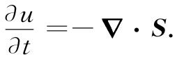
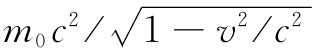
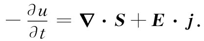

现在我们要定量地写出关于电磁学的能量守恒。为此，就必须描述在空间任何体积元中能量及其能流速率各有若干。假定我们首先只考虑电磁场的能量，因而将令u代表场的能量密度 （也就是在空间内单位体积的能量），并令矢量S代表场的能通量密度 （即单位时间通过垂直于流动方向的单位截面的能流）。于是，同电荷守恒、即式（27.1）完全相似，我们可以把场能量的“局域”守恒律写成
 （27.2）
当然，这一定律并非普遍正确，说场能量守恒是不对的。假设你在一个黑暗房间里打开电灯开关，忽然之间整个房间里都充满了灯光，所以就有了场方面的能量，尽管在此之前一点光也没有。式（27.2）并非一个完全的守恒律，因为场 能量单独 来说是不会守恒的，只有世界上的总能量——也包括实物方面的能量——才会守恒。如果实物对场做了一些功或场对实物做了一些功，则场的能量将会发生改变。
可是，若在有关体积里存在实物，则我们知道它具有多少能量：每个粒子具有能量 。实物的总能量正好是所有粒子能量之和，而通过一个面的这种能流就正好是通过这个面的每个粒子所携带的能量之和。现在我们只想谈论有关电磁场方面的能量，因此就必须写出这样一个方程，它会说出在某个给定体积里的总场 能的减少，或者 是由于场能从该体积里流出，或者 是由于场把能量给了实物而有了损失（或从实物处获得能量，那不过是能量的负损失）。体积V内的场能为
∫V udV，
而其减少速率则是这个积分对时间微商的负值。从体积V出来的场的能流等于S的法向分量对包围着V的整个曲面Σ的积分，即
∫Σ S·nda.
因此，
我们以前已经知道，场对单位体积实物做功的功率为E·j［作用于一粒子上的力为F=q（E+v×B），因而做功的功率就是F·v=qE·v。若单位体积里共有N个粒子，则单位体积的作功功率为NqE·v，但Nqv=j］，所以量E·j必然等于单位时间内单位体积中场损失的能量。于是式（27.3）便变成
这是场内能量的守恒律。如果能够把第二项变成体积积分，就可以将它转变成一个像式（27.2）那样的微分方程，这是容易用高斯定理做到的。S的法向分量的面积分等于它的散度对整个内部体积的积分。因此，式（27.3）就相当于
其中我们已把第一项中的时间微商置于该积分之内。由于这一方程对于任何体积都适用，因而可以除去那些积分而得到关于电磁场的能量方程式：
 （27.5）
现在，这一方程对我们毫无用处，除非知道u和S各是什么。也许仅能告诉你们用E和B来表达它们的式子，因为我们真正希望得到的只是结果。然而，这里却宁愿向你们展示曾于1884年由坡印亭用来获得S和u的公式的那种论证，以便使你们能够知道这些式子是从何而来的（然而，对于今后的工作来说，你们并不需要去牢记这一推导）。